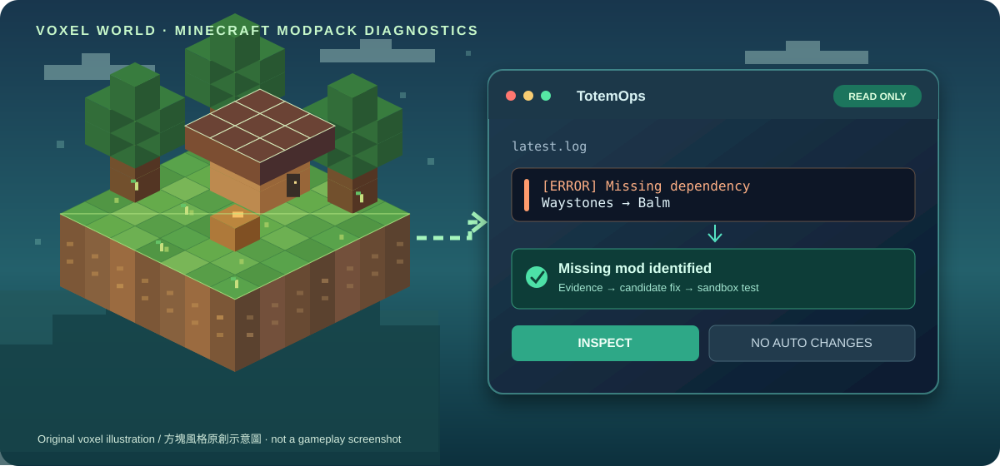
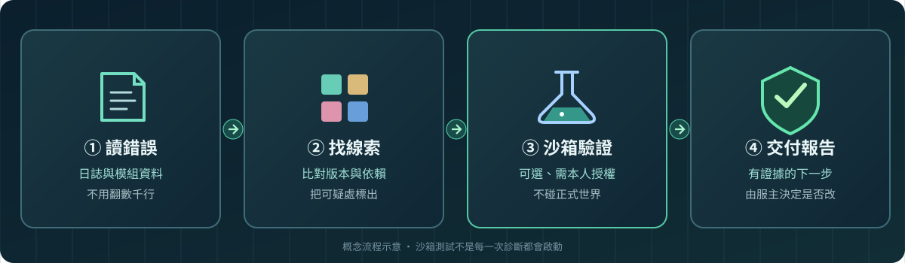

伺服器突然開不了
很長的錯誤日誌不知道看哪裡？幫你挑出關鍵錯誤，給出下一步檢查方向。
已可使用開源工具 · Minecraft 故障診斷
不死圖騰幫服主看懂崩潰日誌、檢查模組依賴、了解更新風險。讓你少翻文件、少靠猜，真正要修改之前先看證據。

原創示意插畫，非 Minecraft 遊戲截圖
THE PAIN POINTS
不想再一個個猜是什麼模組壞了、更新會不會讓整台伺服器不能玩？先從最常見的問題開始。
很長的錯誤日誌不知道看哪裡？幫你挑出關鍵錯誤，給出下一步檢查方向。
已可使用找出模組宣告的前置依賴、版本問題與相容性線索，不用只靠猜。
已可使用先檢查更新包內容和風險，再決定是否發布，不直接替你改檔案。
部分可用依 Minecraft 與 Loader 版本找到候選模組及前置需求；整套能不能跑還需要驗證。
部分可用協助開發者閱讀程式庫、檢查 Forge／NeoForge 差異，配合原本的 CI 測試。
部分可用協助檢查教學、啟動器與更新流程；真正的雙擊安裝後直接遊玩還在規劃。
持續開發HOW IT WORKS
不需要把正式世界交給 AI。你可以只請它分析日誌，等有需要且你同意，才在隔離沙箱測試。
它把 Python 分析、模組資料、已知版本資訊、可選 AI 和既有 Minecraft 工具串在一起。AI 負責解釋，檔案驗證和測試結果要靠工具確認。
你不必換掉原有的 Minecraft 啟動器、同步器或管理面板；也不必先申請付費 AI 帳號才能跑基本分析。
想看進階技術說明 →
流程示意：真實沙箱測試只會在符合條件並取得授權後執行
REAL TEST
在 Minecraft 1.21.1／NeoForge 21.1.259 的一次性沙箱中，移除必要前置 Balm 後，伺服器真的報錯；加入已校驗的 Balm，再次啟動後通過 Minecraft 協定就緒檢查。
注意：這證明該次伺服器能回應協定，不代表玩家登入、傳送功能或所有模組都已通過測試。其餘五類是合成日誌辨識測試，不是五次真實修復。
查看測試證據 →HONEST STATUS
GET STARTED
適合會開終端機的服主或開發者。基本唯讀功能不用 Docker、Java 遊戲伺服器或 AI API Key；需要 Python 3.11+。
git clone https://github.com/j0935586110-lgtm/TotemOps.git從 GitHub 取得開源 Alpha 版。
cd TotemOps
python3 -m pip install -r requirements.txtWindows 可以使用 py -3 代替 python3。
python3 tools/totem_operator.py quick diagnose latest.log把 latest.log 改成你自己的日誌路徑，分析不會修改伺服器。